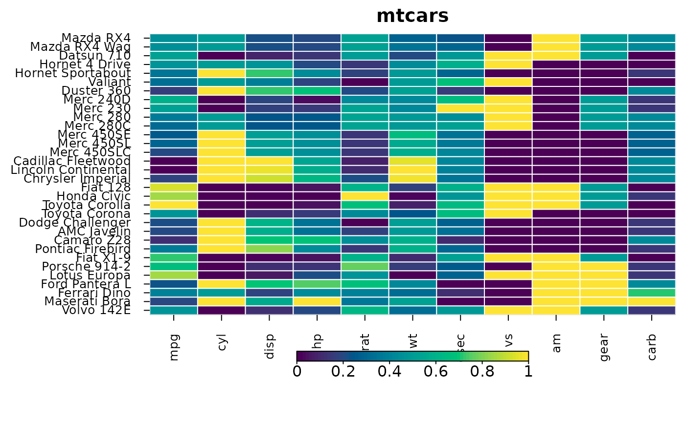
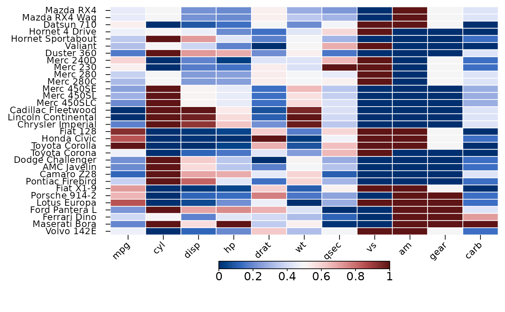
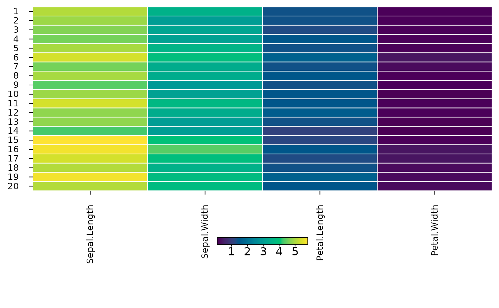

heat_map_style() keeps settings of heat_map - text
sizes and fonts, colours and colour scales, legend options, cell borders
and the like - to be used by every heatmap that is given the style
(heat_map(style = )) or, set with options(HeatmapR.style = ),
by every heatmap of a session, including those drawn by
heat_map_dot, heat_map_cor,
heat_map_align and heat_map_composition.
Arguments given to heat_map() take precedence over the style, and
the style over the option, so a heatmap can still change any setting.
Settings that a function sets itself (e.g. the circles of a dot plot) take
precedence over the style too. A redrawn heatmap keeps the style it was
drawn with.
Arguments
- ...
settings, named by the arguments of
heat_map, and styles to build on (unnamed; later settings and styles replace earlier ones).
Examples
report <- heat_map_style(
cell_col_scale = "viridis",
cell_border_line_col = "white",
axis_text_size_x = 0.8,
axis_text_size_y = 0.8,
title_text_size = 1.2,
legend_side = "bottom"
)
report
#> A heat_map() style with 6 settings:
#> cell_col_scale = "viridis"
#> cell_border_line_col = "white"
#> axis_text_size_x = 0.8
#> axis_text_size_y = 0.8
#> title_text_size = 1.2
#> legend_side = "bottom"
heat_map(mtcars, scale = "column", style = report, title = "mtcars",
popup = FALSE)
#> Applying range scaling to each column...

# Built on, and changed by the arguments of a heatmap
wide <- heat_map_style(report, axis_text_angle_x = 45)
heat_map(mtcars, scale = "column", style = wide, cell_col_scale = "Blue-Red 3",
popup = FALSE)
#> Applying range scaling to each column...

# For every heatmap of the session
old <- options(HeatmapR.style = report)
heat_map(iris[1:20, 1:4], popup = FALSE)

options(old)